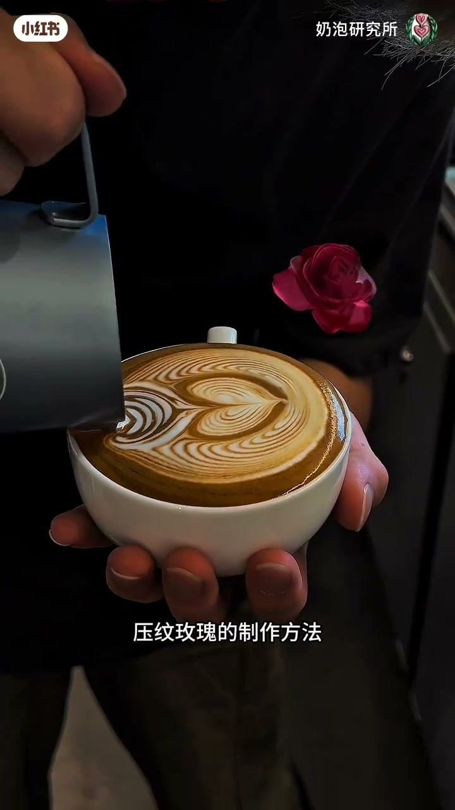
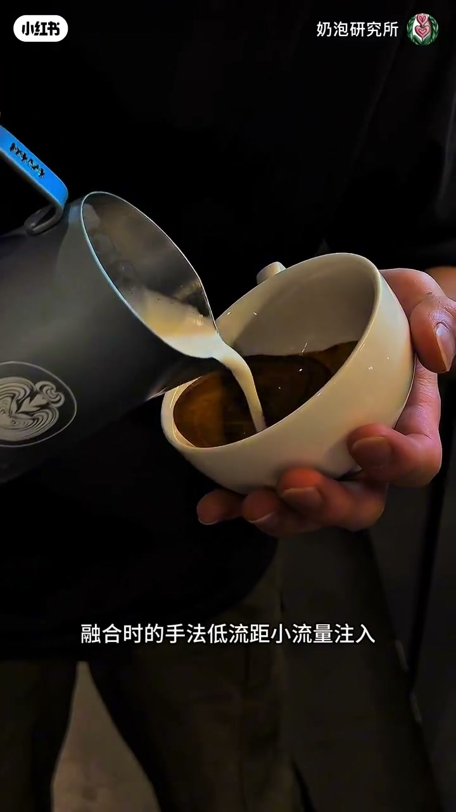
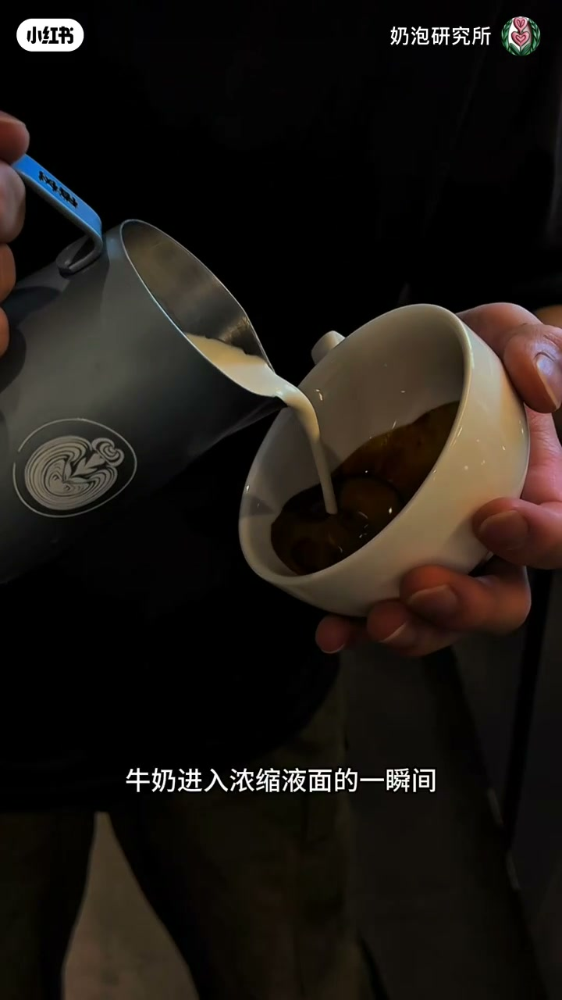
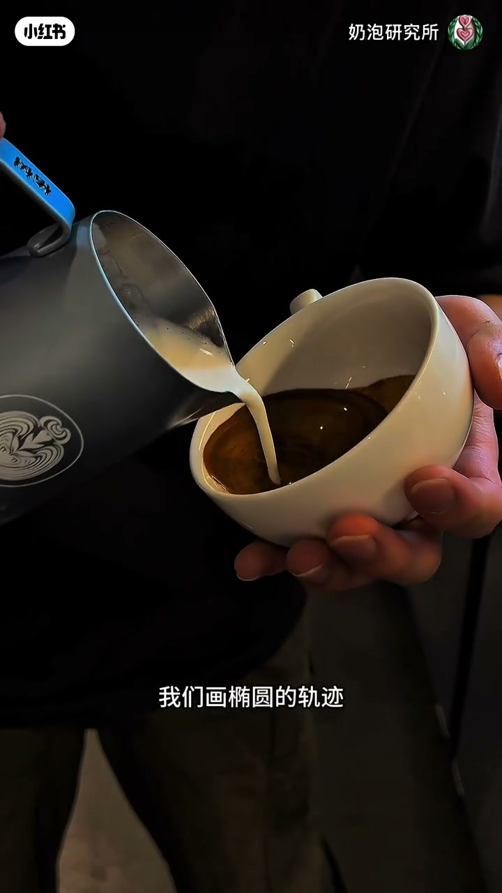
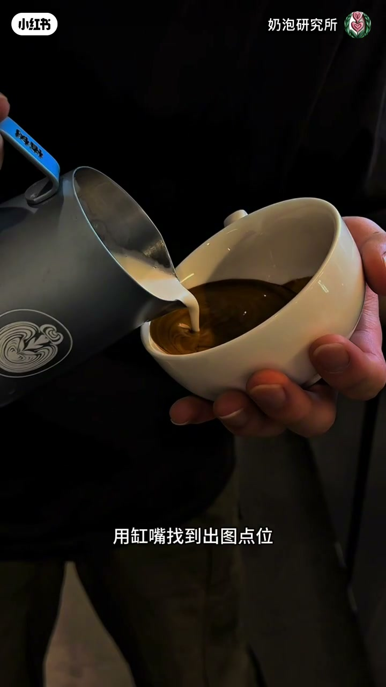
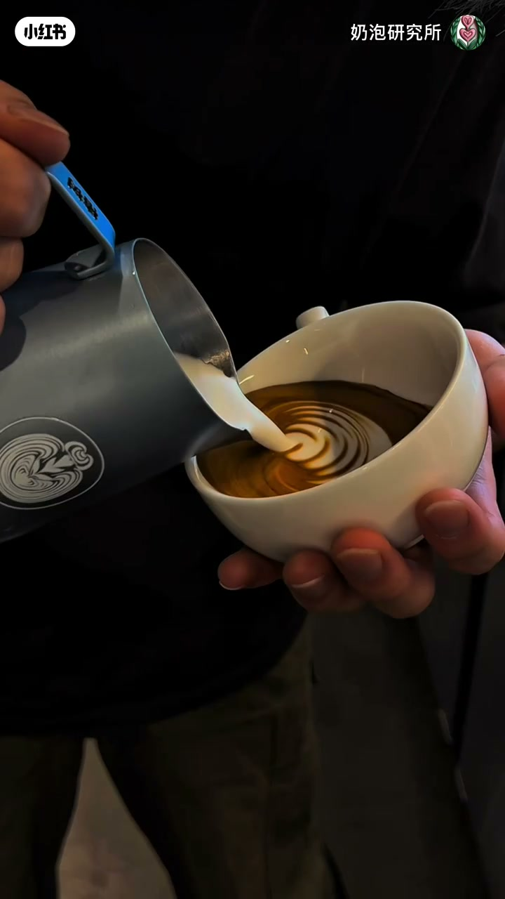
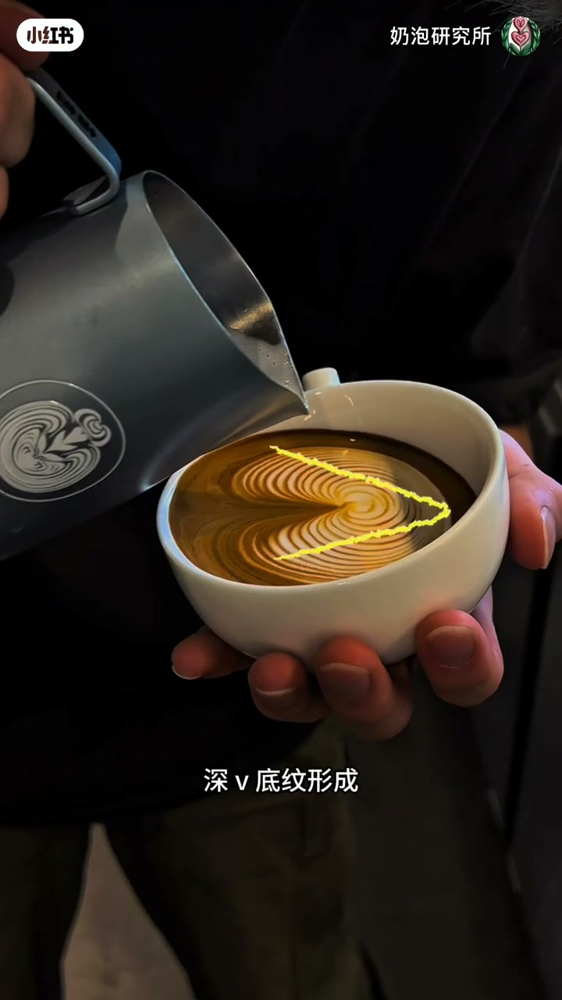
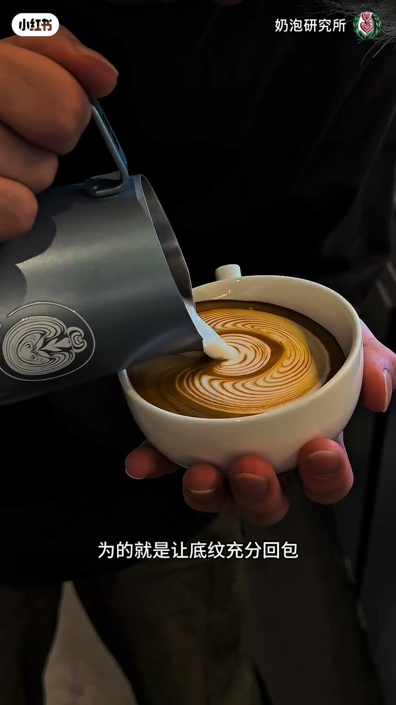
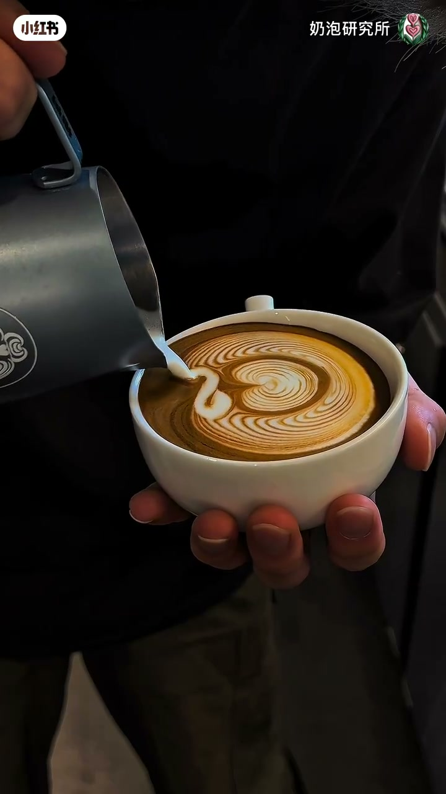
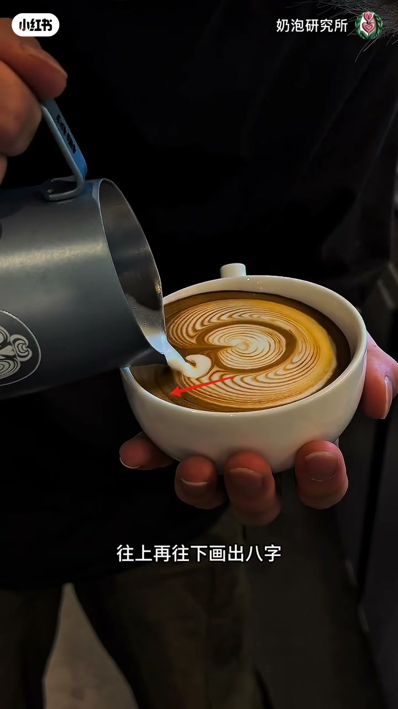

内容要点
一支 2 分多钟的拿铁拉花教学视频，用大白话拆解「压纹玫瑰」的完整流程。从开场的椭圆搅拌式融合（低流距小流量注入、注入点在杯底距液面最高点）讲起，然后是画椭圆搅拌（轨迹必须在液面内、别碰杯壁）、融合到四分满后开底（注入点位在液面中心偏上、持续增大流量、半圆形成后缸子往前推进两厘米、形成深V底纹），接着二段注入用更大流量让底纹回包，再用钢嘴画竖着的八字收尾（钢嘴贴近液面、速度要快），最后像做包心一样左右交替推花瓣，最后一颗花蕊加大流量完全包裹。适合想学拉花玫瑰的咖啡爱好者。
知识结构
画椭圆搅拌式融合，低流距小流量注入；注入点在杯底距液面最高的点位，避免砸出气泡。
牛奶进入液面瞬间迅速拉高流距画椭圆；轨迹必须在液面里，不碰杯壁，防止液面变脏。
融合到四分满，钢嘴在液面中心偏上注入，持续增大流量边摆动边回杯；纹路半圆时缸子前推两厘米形成深V底纹；二段注入流量更大，让底纹充分回包。
底纹双侧最高点偏中心用钢嘴画竖八字，贴近液面速度快；然后像包心一样左右交替推花瓣，花蕊加大流量包裹。
压纹玫瑰的灵魂是「流量节奏 + 液面轨迹控制」：融合阶段低流距小流量防气泡，开底阶段持续增流量边摆边回杯推进两厘米，二段加大流量让底纹回包，收尾八字贴近液面快画，最后左右交替推花瓣、花蕊加大流量收口。每一步的要点都是让奶泡稳定停留在液面、纹路干净成型。
00:00-00:14开场与融合：低流距小流量注入
视频直接进入教学：「今天给大家详细拆解一下压纹玫瑰的制作方法，在这里提前祝大家七夕快乐。」
第一步是融合：「画椭圆搅拌式融合，融合时的手法：低流距、小流量注入。」
要点是注入点位置：「注入点一定要在我们杯底距离页面最高的点位进行」，原因是为了「避免刚开始由于页面高度不够而砸出气泡来」。


00:15-00:44画椭圆搅拌：拉高流距、轨迹在液面内
融合后进入画椭圆阶段：「牛奶进入浓缩页面的一瞬间，迅速拉高流距，开始画椭圆搅拌。」
最关键的动作约束是轨迹：「画椭圆的轨迹一定要在页面里进行，不要碰到杯壁上去，导致页面变脏。」
UP 主还提醒可以暂停视频看图文里的具体做法。


00:45-01:19开底与二段注入：深V底纹、流量回包
融合到四分满开始开底：「用钢嘴找到注入点位：页面中心点偏上的位置」，然后「小流量注入，持续增大流量，边摆动边回杯」。
当「纹路形成半圆时，缸子开始往前推进，推进距离大概是两厘米左右」，「开底结束，深V底纹形成」。
二段注入的要点是流量：「注入时的流量要比一段开底时的流量更大，为的就是让底纹充分回包，完全包裹住我们的二段纹路。」



01:20-02:11八字收尾与推花瓣：贴近液面、快画收口
「在底纹双侧最高点偏中心的位置，用钢嘴画一个竖着的八字。」注意「钢嘴一定要非常贴近页面，并且速度要快」——因为「缸内湿奶泡过多，如果钢嘴距离页面不够近的话，奶泡是没有办法停留在液体表面的」。
「从八字的中心开始注入，往上再往下，画出八字完成收尾，玫瑰花最外侧的花瓣制作完成。」
最后像做包心一样：「左边推一颗花瓣，右边推一颗花瓣，左边一颗，右边一颗」，钢嘴直接扎进液面、拉高时流量不要断开；「最后一颗花蕊流量加大，使其完全包裹在花瓣里即可」。



完整转录（20段）
以下文本由 Whisper medium 模型自动转录，可能存在少量识别误差，已尽可能修正。
哈喽今天给大家详细拆解一下压文玫瑰的制作方法在这里提前祝大家七夕快乐
首先我们画椭圆搅拌式融合融合时的手法低流距小流量注入
注意这里的注入点一定要在我们杯底距离页面最高的点位进行
避免刚开始由于页面高度不够而砸出气泡来
牛奶进入浓缩页面的一瞬间 迅速拉高流距 开始画椭圆搅拌
这里需要注意 我们画椭圆的轨迹一定要在页面里进行
不要碰到杯壁上去 导致页面变脏 具体做法大家可以暂停视频观看图文里的内容
融合到四分满 用钢嘴找到出土点位 页面中心点偏上的位置
小流量注入 持续增大流量 边摆动边回杯
待纹路形成半圆时 缸子开始往前推进 推进距离大概是两厘米左右
开底结束 深V底纹形成 二段注入点在底纹双侧最高点偏下的位置开始
这里需要注意 注入时的流量要比一段开底时的流量更大 为的就是让底纹充分回包
完全包裹住我们的二段纹路 最后我们在底纹双侧最高点偏中心的位置 用钢嘴画一个竖着的八字
这时我们要注意 钢嘴一定要非常贴近页面 并且速度要快
由于钢内湿奶泡过多的原因 如果钢嘴距离页面不够近的话 奶泡是没有办法停留在液体表面的
从八字的中心开始注入 往上再往下
画出八字 完成收尾 玫瑰花最外侧的花瓣制作完成 这里我们注意看 此时的手法跟制作包心是一样的
左边推一颗花瓣 右边推一颗花瓣 左边一颗 右边一颗
都是钢嘴直接扎进页面 拉高时流量不要短开
最后一颗花蕊流量加大 使其完全包裹在花瓣里即可